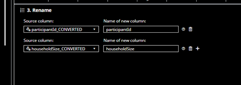
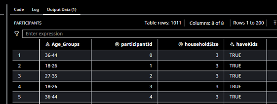
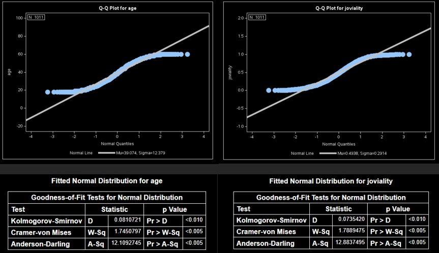

Assignment 1 - Show me the numbers
1. Introduction
City of Engagement is a small city located at Country of Nowhere. The local council of the city is in the process of preparing the Local Plan 2024. A sample survey of representative residents had been conducted to collect data related to their household demographic and spending patterns. The city aims to use this data to assist with their major community revitalization efforts, including how to allocate a large city renewal grant to improve the happiness of their local residents.
2. Objectives
This report will employ Interactive Data Exploration and Analysis (IDEA) to discover insights from the survey data related to residents’ household demographics and financial health.
This analysis aims to characterise the demographics of the town and describe how these affect the happiness of residents. Further, this analysis also aims to examine how household finances affect the quality of life of residents.
This technical report provides a detailed description of the data preparation and analysis conducted. It also highlights the key insights from the analysis and provides recommendations from the observations.
3. Data Preparation
2 different datasets were used for this analysis, ‘Participants.csv’ and ‘FinancialJournal.csv’.
The Participants dataset comprises of data related to the demographics of each survey participant, including information such as age, household size, children, education level, Interest group and Joviality.
The Financial Journal dataset is a much larger dataset and consists of participant’s financial records from a time period of March 2022 to May 2023. This consists of 6 different types of transactions, namely, Education, Food, Shelter, Recreation, Rent Adjustment and Wages.
An initial check of the two datasets via SAS studio did not reveal any missing data from the two datasets.
The following sub-sections highlight the major data-related issues and the steps taken to address them. The data preparation change log is detailed in the Appendix.
3.1 Converting timestamp to datetime
The timestamp column in the financial journal dataset was set with a varchar format.
We convert the timestamp variable from varchar format to an appropriate datetime format.
3.2 Converting categorical variables to correct data type
The ‘participantId’ and ‘householdSize’ variable was set with a numeric double format. We convert ‘participantId’ to a varchar format to ensure that this variable could be used as a distinct identifier when merging both datasets.
Similarly, we convert ‘householdSize’ to varchar to enable categorical analysis in the data analysis stage, since there are only 3 distinct values in household size.

Upon conversion, we remove the old columns and rename the converted columns.

3.3 Remove Duplicates from the Financial Journal dataset
There are 1,113 duplicate entries for 2 categories, namely education and shelter. These are monthly entries and seem to occur only in March 2022.
We remove these duplicates in SAS studio, by using the remove duplicate function.
Upon removal, our number of rows has decreased to 1,855,217 from the original 1,856,330.
3.4 Data quality issue: Standardising and consolidating financial journal entries
Financial journal entries are not standardised. Some transaction categories are recorded as single monthly entries while others are recorded as multiple daily entries.
We standardize these timestamps and consolidate the daily entries to single monthly entries. First, we extract and separate the date, time, month, and year from our timestamp variable.
We use SAS studio to extract the month and year via SQL code.
Next, we do a group by selection by ‘participantID’, ‘category’, ‘year’ and ‘month’; and sum up the total monthly amounts for each category.
These series of actions will consolidate all timestamp entries into single monthly amounts, and sort it by participantID, category, year, and month.
As a result, we have reduced the number of rows from 1,855,217 rows to 55,498 rows by consolidating the daily transactions to monthly transaction entries.
3.5 Grouping Participants by Age Groups (Binning)
The 1011 participants in the survey range from an age of 18 to 60. In order to increase our flexibility in the data analysis stage, we can group participants into distinct age groups. Through binning, we convert a numerical variable into a categorical one, which enable us to do additional analyses like association testing. This is done by using the recode ranges task in SAS studio.
New age ranges are defined as per Fig 19. These represent 20th percentiles in sequence.
Subsequently, we create a new column ‘Age_Groups’ for our participants dataset.

3.6 Integrating data by merging Participants and Financial Journal data sets
Previously, we had consolidated the Financial Journal dataset and reduced it to 55,498 rows. This lists all monthly transactions per category for each participant on a row by row basis.
However, the participant dataset is set in the format of listing variables on a column by column basis.
We proceed to sort and transpose our Financial Journal dataset to a similar column by column format. This is done by SAS studio, using SQL code.
Creating the new column ‘cat_month’, allows us to use it as a criterion to group all amounts of the same type, month, and year together. We next sort by participant ID.
This enables us to get an ordered list of monthly category amounts by participant ID as can be seen in Fig 26
Next, we use the below SQL code to transpose the rows into columns and standardize for any missing fields
We generate a new table with 1011 rows, which matches our participants dataset.
Next, we use a Join method in SAS studio to combine both datasets using the common identifier, ‘participantID’.
We now have a combined dataset which we can use in our data analysis stage.
4. Data Analysis
This section aims to achieve the following objectives:
Understand the patterns between attributes
Evaluate attributes that can be used to answer the objectives of this study, namely, demographics and happiness, and the relationship between finances and the quality of life.
All hypothesis tests are conducted using a 5% significant level. Normality tests are conducted on continuous distributions to decide if a parametric or non-parametric test is to be conducted.
4.1 Observation 1 – The distribution for Joviality and Age amongst participants is not normal
From our IDEA analysis, we noted that Joviality scores and Ages for participants are not evenly distributed. We examine this by conducting a Distribution Analysis test.
Normality Distribution test Hypotheses:
H0: The distribution of Joviality scores and Ages resembles normal distribution.
H1: The distribution of Joviality scores and Ages failed to resemble normal distribution.

From our QQ plot and Goodness of fit tests, p-values for both Joviality and Ages are < 0.05.
Hence, we reject the null hypothesis and infer that the distribution of Joviality and Age does not resemble normal distribution.
4.2 Observation 2 – The Joviality for participants with children is the same as participants without.
From our IDEA analysis, we noted that mean joviality for participants with children is somewhat higher than participants without. We examine this by conducting a two-sample test.
Two-sample mean test hypotheses:
H0: The mean joviality is the same for participants with and without children
H1: The mean joviality is not the same for participants with and without children
Both the Shapiro-Wilk and Anderson-Darling tests derived p-values of < 0.05; ie distribution is not normal. Therefore, two-sample non-parametric test was used to compare the mean joviality across participants with and without children.
The two-sample Wilcoxon test yielded a p-value > 0.05. Hence, we have failed to reject the null hypothesis. We can conclude that the mean joviality is the same.
Conclusion:
There is no strong evidence to conclude that participants with children happier on average.
4.3 Observation 3 – There is a relationship between education level and having children
From our IDEA analysis, we noted a relationship between education level and having children. Particularly, we noted that the percentage of not having children is comparatively higher for participants with Bachelors and Graduate. We examine this further by conducting a Chi-square test of independence.

Chi-square test hypotheses:
H0: Education level is independent of whether one has children (There is no association between education level and having children)
H1: Education level is not independent of whether one has children (There is an association between education level and having children)
From the test results, the p-value is < 0.05. Hence, we reject the null hypothesis and conclude that there is a statistically significant association between education level and having children.
Conclusion:
A participant’s education level may have some bearing on the decision to have children.
4.4 Observation 4 – The mean Joviality for participants is the same across all education levels
From our IDEA analysis, we noted that the mean joviality for participants with an education level of ‘bachelors’ and ‘graduate’ is slightly higher than other participants.
We examine this by conducting a One-way ANOVA test to test for differences in the means of the 4 groups of education level.

First, we run normality tests to check the distribution.
Both the Shapiro-Wilk and Anderson-Darling tests derived p-values < 0.05; ie the distribution for all 4 classes is not normal. Hence, we will proceed with the non-parametric one-way ANOVA test.
Non-parametric One-way ANOVA test hypotheses:
H0: There is no difference in the mean joviality across different education levels.
H1: There is a difference in the mean joviality across different education levels.
The p-value from the Kruskal-Wallis test is 0.7018, which is > 0.05. This means that we do not have sufficient evidence to reject the null hypothesis.
Conclusion:
Education level does not significantly impact one’s happiness level.
4.5 Observation 5 – There is a relationship between Education Level and Mean Wages
From our IDEA analysis, we noted a relationship in the mean wages for participants in different education levels, where participants with higher education levels have higher mean wages. We examine this by conducting a One-way ANOVA test to test for differences in the mean wages of the 4 different education levels.
First, we run normality tests to check the distribution.
Both the Shapiro-Wilk and Anderson-Darling tests derived p-values < 0.05; ie the distribution for all 4 classes in education level is not normal. Therefore, we use the non-parametric one-way ANOVA test to compare the means.
Non-parametric One-way ANOVA test hypotheses:
H0: There is no difference in the mean wages across different education levels.
H1: There is a difference in the mean wages for at least one pair of education levels.
Given that the p-value (<.0001) is much smaller than the common significance threshold of 0.05, we have evidence to reject the null hypothesis.
Conclusion:
A higher Education level is related to a higher mean wage.
4.7 Observation 7 – There is no difference in Joviality for participants in different Age groups
From our IDEA analysis, we noted a difference in the mean Joviality for different Age groups. We examined this by conducting a One-way ANOVA test to test for differences in the mean joviality for the 5 different age groups.
First, we run normality tests to check the distribution.
Both the Shapiro-Wilk and Anderson-Darling tests derived p-values < 0.05; ie the distribution for all 4 classes in age groups is not normal. Therefore, we proceed with a non-parametric one-way ANOVA test to compare the means.
Non-parametric One-way ANOVA test hypotheses:
H0: There is no difference in the mean joviality across age groups
H1: There is a difference in the mean joviality across age groups.
The p-value from the Kruskal-Wallis test is 0.1852, which is > 0.05. This means that we do not have sufficient evidence to reject the null hypothesis
Conclusion:
There is no strong evidence that different age groups are happier than others.
4.8 Observation 8 – There is no difference in Joviality for different household sizes.
From our IDEA analysis, we noted that the mean Joviality for participants with a household size of 3 is somewhat higher than other participants. We examine this with a One-way ANOVA test to test for differences in the means of the 3 classes of household sizes.
First, we run normality tests to check the distribution.
Both the Shapiro-Wilk and Anderson-Darling tests derived p-values < 0.05; ie the distribution for all 3 classes in Household size is not normal. Therefore, we use non-parametric one-way ANOVA test to compare the means.
Non-parametric One-way ANOVA test hypotheses:
H0: There is no difference in the mean joviality across different household sizes
H1: There is a difference in the mean joviality across different household sizes.
The p-value from the Kruskal-Wallis test is 0.6854, which is > 0.05. This means that we do not have sufficient evidence to reject the null hypothesis
Conclusion:
There is no strong evidence that different household sizes are happier than others
4.9 Observation 9 – Participants financial health does not improve over time
From our IDEA analysis, we noted that monthly wages do not increase over time, and instead shows a decreasing trend.
As can be seen from Fig 53, all participants in all household types, spend the most from their wages on shelter.
From Fig 54, we can observe that Shelter occupies the top expenditure bracket and is constant throughout the time period.
Therefore, from the constant expenditure on shelter and decreasing wages over time, we can infer that participants are compensating for this by spending lesser on recreation and food. Educational spend does not impact our conclusion due to its low relative cost and constant or fixed pricing. Furthermore, educational spend is exclusive to participants with children, who make up 1/3 of the sample size.
Conclusion:
Participants do not get wealthier over time and have to compensate by cutting back on recreation and food as they prioritize Shelter over other items.
5. Interpretation of Analyses
The following points summarises the key findings from the analyses conducted:
Uniform Joviality among Parents & Non-Parents: Despite common perceptions, having children doesn’t necessarily correlate with increased joviality. Life satisfaction could be influenced by other factors beyond family structure.
Education & Parenthood: Higher educational attainment may influence life decisions, including the choice to have children, potentially due to career priorities or financial considerations.
Education, Wages & Joviality: Higher education seems to correlate with better wages, but not necessarily with increased joviality. This suggests that factors beyond income play a significant role in determining one’s happiness. For example, longer working hours or a lack of work life balance associated with better paying jobs may affect happiness levels.
Joviality & Expenditure: The association between joviality and recreational spend highlights the importance of leisure and personal time. Conversely, higher wages not correlating directly with higher joviality may hint at societal pressures or job-related stress.
Age & Joviality: The consistent joviality across age groups implies that age-specific factors or challenges don’t significantly affect overall happiness.
Financial Health Over Time: The observed trend where participants don’t become wealthier over time and prioritize shelter over other expenses, implies a possible housing affordability crisis, especially if residents are compromising on other basic needs.
Wages & Essential Expenses: Wages being correlated with food and shelter expenditures signifies the necessity-driven nature of earnings, which can influence overall life satisfaction.
6. Recommendations
The following initiatives are recommended for the community revitalization efforts:
Community Building: Encourage community programs that emphasize shared experiences to increase joviality beyond materialistic pursuits.
Education & Career Counselling: Given the relationship between education, wages, and life decisions, comprehensive education and career counselling can assist residents in making informed life choices.
Financial Literacy Programs: Equip residents with tools to manage and optimize their finances, especially as they navigate wage and expenditure challenges.
Housing Policies: Given the prominence of shelter as an expenditure, housing affordability initiatives or rent-control measures may help alleviate financial pressures.
Work-Life Balance: Promote employer policies that emphasize a healthy work-life balance, as higher wages alone don’t correlate with increased joviality.
Leisure & Recreation Initiatives: Subsidize and promote recreational activities to ensure residents have avenues for relaxation, given its correlation with joviality.
Support for Families: To encourage family growth, the city council can consider child benefits, parental support programs, and affordable childcare services.
7. Appendix
Data Preparation Change log
8. Data Limitations
Sample Representativeness:
It is unclear if the sample collected is truly representative of the city residents due to a lack of additional data on participants like geography, type of home, marital status, occupation, rent cost etc.
There could have potentially been some sample bias towards specific locations or demographic groups, which may explain the relatively high proportion of participants without children and with lower educational qualifications surveyed. This could have hindered the ability to find associations between joviality and the given categorical variables.
Response Bias:
Joviality scores were recorded only at the start, but financial data was taken throughout the year. The large one-time wage inflows in March 2022 could have disproportionally influenced these joviality scores.
A declining trend in expenditure on Food and Recreation was observed, but no subsequent joviality changes were recorded. Furthermore, changes in personal circumstances could have also affected joviality but is hard to infer due to the limited available data on participants.
Causation vs Correlation
Due to the lack of subsequent measures of joviality, it is unclear if observed correlations with wages and expense categories continually to directly result in changes in joviality.
Recommendation for Improved Data Collection:
Conduct multiple survey rounds for comprehensive data.
Collect additional data on the demographics profile of participants
Test findings from the initial survey against a separate sample.
Important Note
SAS and all other SAS Institute Inc. product or service names are registered trademarks or trademarks of SAS Institute Inc. in the USA and other countries. ® indicates USA registration.
Other brand and product names are trademarks of their respective companies.